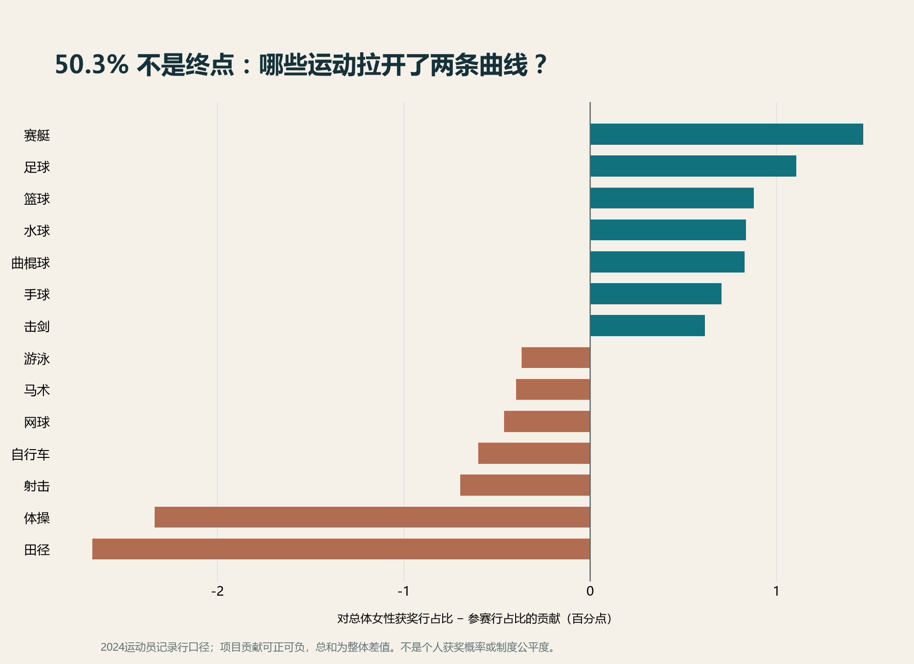

+1.185总体差值 · 百分点
=+1.294项目内部结构贡献
−0.109项目权重贡献
总数背后的抵消
正向贡献较大的运动有 赛艇（+1.46）、足球（+1.11）、篮球（+0.88） 个百分点；负向贡献较大的有 田径（-2.67）、体操（-2.34）、射击（-0.70） 个百分点。总差值只有 +1.185 个百分点，是多项结构变化相加后的结果。
怎样复算
对每个运动家族分别计算参赛与获奖行的权重、其中女性份额，再用对称分解将整体差值拆为“家族内部份额差”与“家族权重变化”。两部分相加严格等于总差值。查看逐项目数据 ↗。
哪些结论不能推出
统计单位是运动员记录行，团队项目会产生多行；项目设置和参赛配额也不同。因此这些差值不是个人获奖概率，更不能直接判断某项运动的制度公平度。阅读完整方法和局限 ↗。